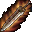
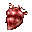
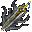
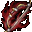
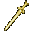
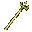
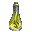
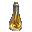
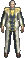

|
2003年5月15日
韓國測試伺服器5月15日更新內容
來源：Lineage Playforum
日文翻譯：Lineage Report
1. 加入了50級的任務。由於這是一個高等級玩家的任務，因此不能只由一人進行，請找同一名你信任的玩家準備任務，然後詢問NPC開始任務。
2. 巫妖長袍現在可以用防卷加防。
3. 在Non-PvP伺服器中，玩家可以在一船區域使用/duel決鬥指令。
韓國測試伺服器5月15日檔案內容
今天韓國測試伺服器更新了三百多個檔案，如下：
新任務道具：
|
圖示 |
名稱 |
鑑定後的訊息 |
|  |
炎魔之劍 |
這是炎魔所使用的劍。假如經過重新精製後此劍可能可以再次使用。
|
|
炎魔之目 |
這是炎魔的眼睛。當中感到有強大的魔法力量。 |
|
炎魔之爪 |
這是炎魔的爪。這好像非常堅硬，可能可以用來製作某些東西。 |
|  |
炎魔之心臟 |
這是炎魔的心臟。當中感到有地獄之火。 |
|  |
死亡之刃 |
擁有炎魔憤怒的劍，此劍在經特別精製後耐久力大幅強化。在任何場合下均不會損壞。 |
|
瑪那水晶球 |
擁有炎魔魔力的水晶球，能夠增加一定程度的MP上限。 |
|  |
火焰之弓 |
擁有炎魔銳利感覺的弓，此弓有很強的靈氣包圍著。 |
|
火焰之劍 |
擁有炎魔銳利感覺的劍，此劍有很強的靈氣包圍著。 |
|
黃金錫杖 |
擁有炎魔不死感覺的杖，此劍有很強的靈氣包圍著。 |
|
古代君主鑰匙 |
古代君主封印炎魔所使用的鑰匙。 |
|
古代騎士鑰匙 |
古代騎士封印炎魔所使用的鑰匙。 |
|
古代妖精鑰匙 |
古代妖精封印炎魔所使用的鑰匙。 |
|
古代法師鑰匙 |
古代魔法師封印炎魔所使用的鑰匙。 |
|
毀滅鑰匙 |
雖然不知道是由誰製作，此鑰匙會決定這個世界的命運。 |
|  |
？？？ |
|
|  |
？？？ |
|
|
？？？ |
|
|
？？？ |
|
|
？？？ |
|
|
？？？ |
|
|
？？？ |
|
 |
？？？ |
|
|  |
？？？ |
|
|  |
？？？ |
|
如果大家有留意上一次的檔案內容，應該會知各職業的任務道具配搭如下：
騎士：炎魔之劍 -> 死亡之刃
法師：炎魔之目 -> 瑪那水晶球
妖精：炎魔之爪 -> 火焰之弓或火焰之劍
王族：炎魔之心臟 -> 黃金錫杖
而在list.spr中加入了以下物件名稱：
獨角獸(Unicorn)
吸血鬼(Vampire)
炎魔追隨者(Barlog Follower)
(Dicarding)
古代人(Ancient Man)
守護盔甲(Guardian Armor)
預言家(Seer)
(Lamuda)
另外城門亦好像會改成4格闊（原先為2格闊）的樣子。
而其中有四名新NPC已經釋出了圖片：
炎魔追隨者
 Dicarding
古代人
Lamuda |